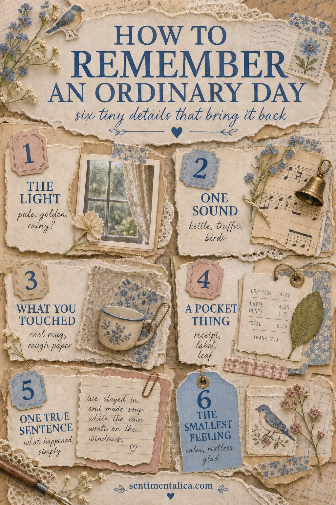
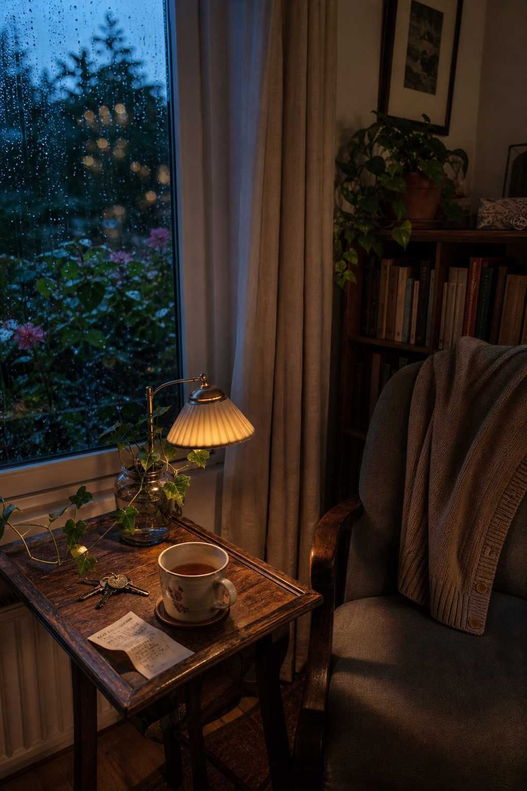

Most days do not arrive looking like memories. They are tea going cold, keys set down in the usual place, rain on the window, and one sentence you nearly forget. That is exactly why they are worth keeping.
You do not need to document the whole day. A few honest details can bring it back more clearly than a polished page full of general decorations. Use this six-detail method when you want to preserve an ordinary day without turning journaling into another task.

1. Begin with the light
Before listing what happened, notice how the day looked. Was the kitchen pale and gray, was the hallway striped with afternoon sun, or did every lamp feel especially golden? Light gives the memory its weather. Choose one paper, wash, or small scrap that holds that same quality.
2. Keep one sound
Write down the sound you would miss if the day disappeared: the kettle beginning to murmur, tires on wet pavement, a neighbor closing a gate, birds arguing in the hedge. It only needs one line. Sounds make a journal page feel inhabited, even when there is no photograph.
3. Remember what your hands touched
Texture is a quiet shortcut back into a moment. Perhaps it was a cool mug, a rough paper bag, a wool sleeve, damp leaves, or the smooth edge of a ticket. Add a material that echoes it if you have one. A torn piece of tissue, thread, fabric, or brown paper can carry the feeling without explaining it.

4. Save one pocket-sized thing
Choose something small enough to keep without creating a pile: a receipt corner, fruit label, tea tag, grocery-list fragment, fallen leaf, or the paper band from a loaf. Trim it if needed. The goal is not to archive every object. It is to keep one piece of evidence that says, this was the day I was living.
5. Write one true sentence
Skip the perfect journal entry. Write the most ordinary sentence that is still true: “We ate soup while the rain wrote on the windows.” “I took the long way home.” “The clean sheets dried by the open window.” Plain language ages beautifully because it leaves the memory room to breathe.
6. Name the smallest feeling
Not every day has a grand emotion. Try a smaller word: settled, tender, restless, relieved, foggy, amused, held. You can tuck it onto a tag, write it under a date stamp, or hide it beneath a flap. Naming the feeling helps the page remember what the facts cannot.
A simple page recipe
Start with one background color that matches the light. Place your pocket thing slightly off center, then add the true sentence close enough that they read as one memory. Let texture fill one edge and leave some open space. Finish with the date and your smallest-feeling word.
If you only have two minutes, keep three things: the light, the sentence, and the feeling. That is enough. The page does not need to prove that the day was special. It only needs to help you meet that version of your life again.
Save the six-detail guide for the next quiet evening, or browse more Sentimentalica journal ideas when you want another gentle place to begin.